IBM Data Studio¶
1. Installation¶
The installation of IBM Data Studio is straightforward. I’ll skip this part.
2. Work with IBM Data Studio: A short tutorial¶
Note
This tutorial adapted from exam 610 prep series part 1 on developerWorks. You can find it here.
2.0 Start db2
2.0.1 start “DB2 Command Window-Administrator” and rundb2start
2.1 Create SAMPLE database
2.1.1 run
db2fsin cmd will bring out: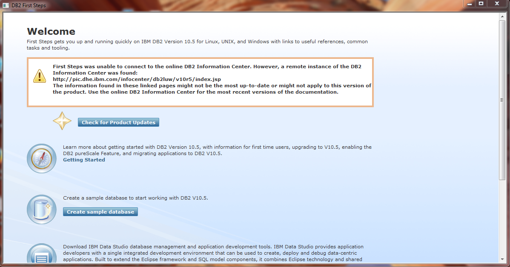2.1.2 click on “Create sample database”, and the following comes out:
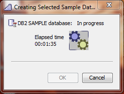2.1.3 Once finished, you can see the following:
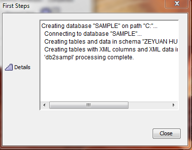Note
step 2.1.1 - 2.1.3 can be done by running
db2samplin cmd.
2.2 Connect to SAMPLE database from Task Launcher
2.2.1 select Administrator 2.2.2 select Connect and browse a database 2.2.3 when Select Connection dialog is presented, click New 2.2.4 When the New Connection dialog appears, select DB2 for Linux, UNIX and Windows in the left-most box, and enter the appropriate information such as database name, host name, port, User ID, password
Note
step 2.2.1 - 2.2.4 can be done by running
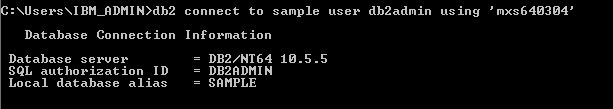CONNECT TO sample USER db2admin USING 'mxs640304'
2.3 Accessing objects and data
2.3.1 See tables, views, sequences and so on
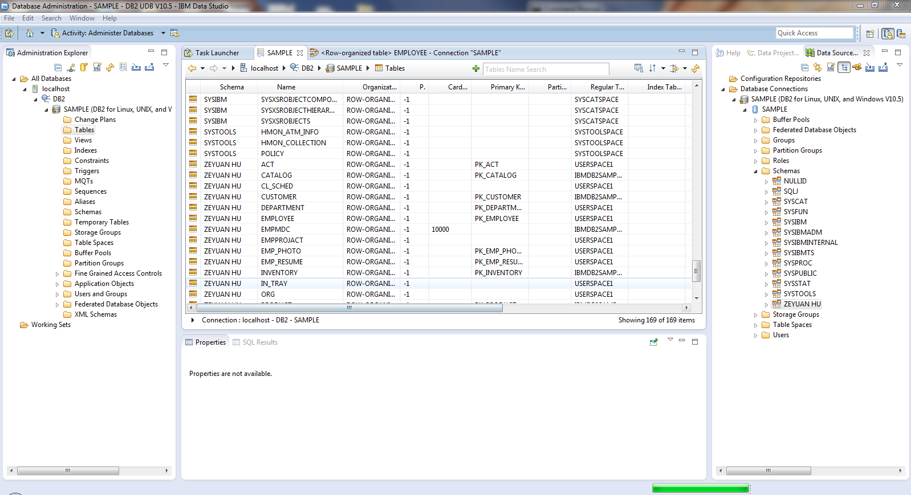2.3.2 Invoking the diagram editor
Use a diagram like the one produced by the diagram editor makes it is easier to understand structures and object relationships.
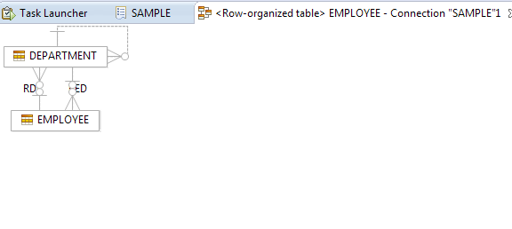Todo
Read more on what exactly the graph represents
2.4 Changing data
Note
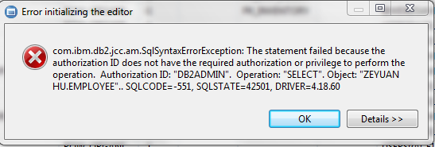You may encounter the error message like this. You can read more Problem (Abstract) on how to resolve it.
Example:
We change a record in ZEYUAN HU.STAFF: change SALARY from 98357.50 to 98358.5 for staff with ID 10
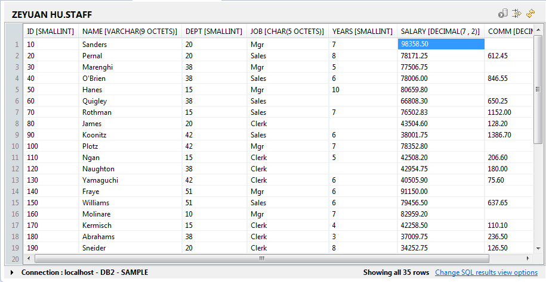Then we commit data change to database, and see the SQL executed by Data Studio:
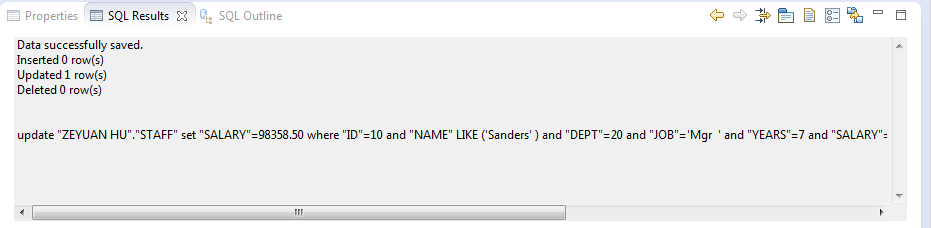
2.5 Issuing queries against a database
Open Data Source Explorer and right click on a database object (i.e. sample), then New SQL Script
Notable features:
- Content Assistant: show up what table to use
- Format SQL: format SQL nicely
- Content tips: show DDL tips
Run SQL and retrieving results
2.6 Tuning queries inside Data Studio
2.6.1 Invoke query tuner through SQL script editor (by pressing the Start tuning graphical button) 2.6.2 Click “config database automatically”. This will generate Explain table 2.6.3 Click 4. Invoke tab, click on Select what to run, check Recommendation Summary under Generate reports
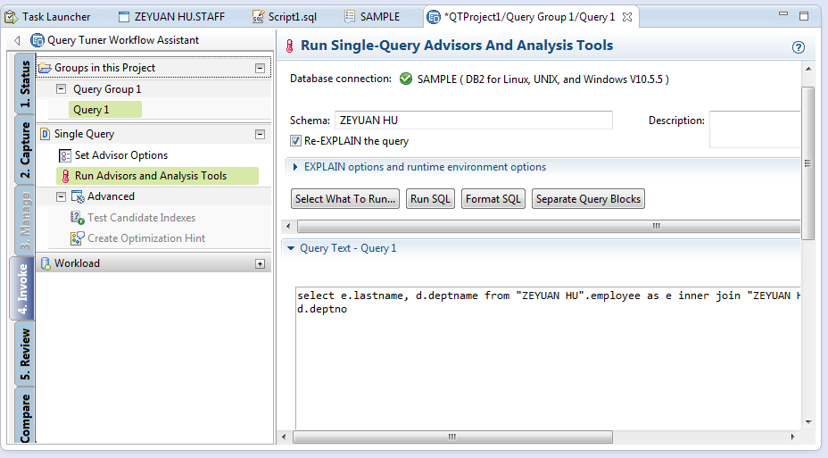 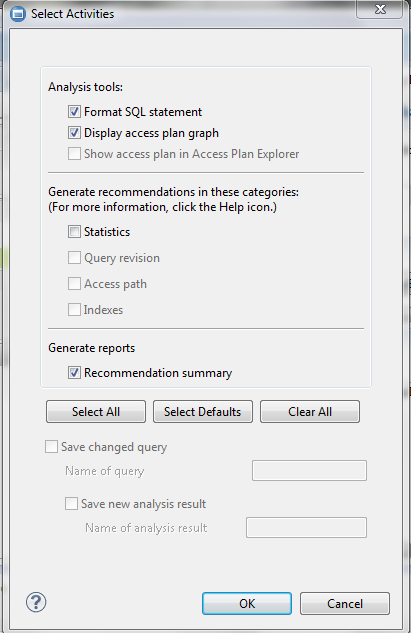2.6.4 Then run Run Advisors and Analysis Tools 2.6.5 Analyze
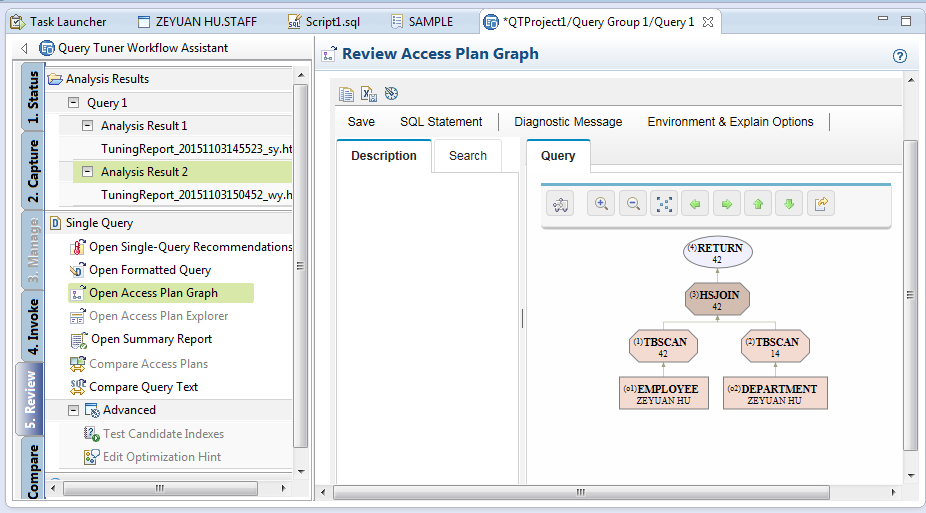
2.7 Database administration with Data Studio
2.7.1 Altering a table’s structure, and reviewing it through a Change Plan
3. Move on¶
Data Studio is a great tool for DBA newcomers. There are pros and cons about this tool, and DBA has to determine by themselves on when to use Command Line Processor (CLP) and when to use Data Studio.
Pro:
- Easy for “changing data” task
- View table structure
- Easy to tuning queries (?)
Con:
- multiple clicks can be compressed into one cmd statement
- GUI changes between versions, which affect where to click, and thus slow down work efficiency